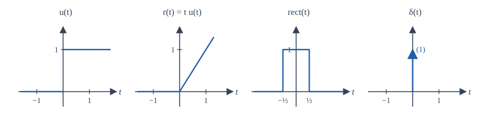
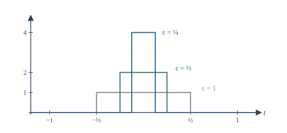
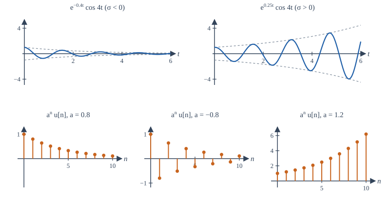
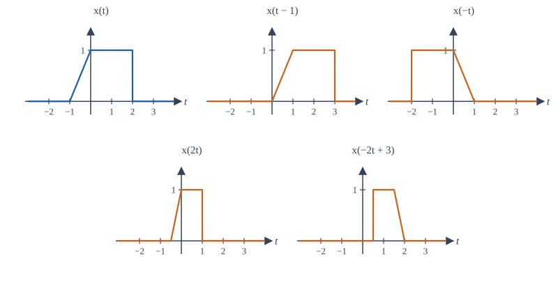
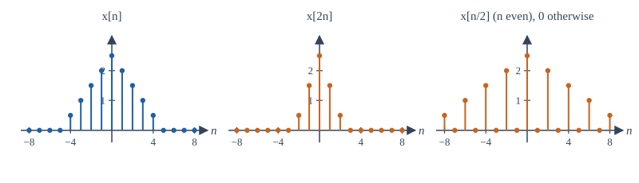

Chapter 2: Elementary Signals and Operations on Signals¶
The building blocks (steps, impulses, exponentials) and how to shift, flip, scale and combine them
Learning outcomes
After this chapter you should be able to:
- define the unit step, unit impulse, ramp, rectangular pulse and sinc in continuous and discrete time, and state how they are related;
- use the sifting property of the impulse to evaluate integrals and sums;
- describe real and complex exponentials and say how \(\sigma\) and \(\omega\) (or the base \(a\)) shape them;
- write a piecewise signal as a sum of shifted steps and ramps;
- carry out time shifting, reversal and scaling, singly and combined, without error, and explain what decimation and expansion do to a sequence.
2.1 The discrete-time unit impulse and unit step¶
The simplest sequences are the unit impulse (or unit sample) and the unit step:
The impulse is a single sample of height one at the origin. The step switches on at \(n = 0\) and stays on. Each can be built from the other. The step is the running sum of the impulse, and the impulse is the first difference of the step:
Multiplying any sequence by a shifted impulse picks out one sample:
The product is zero everywhere except at \(n = n_0\), where it equals \(x[n_0]\). Adding up such products for every \(n_0\) rebuilds the whole sequence:
This equation looks like a trivial restatement, but it is the single most important identity of Chapter 4. It says that any sequence is a weighted sum of shifted impulses, the weights being the samples themselves. If we know what a system does to one impulse, and the system is linear and time-invariant, we will know what it does to every sequence.
Example 2.1 A sequence as a sum of impulses
The finite sequence with \(x[-1] = 2\), \(x[0] = 1\), \(x[1] = -1\), \(x[3] = 4\) and zero elsewhere is
The pulse \(p[n] = u[n] - u[n-4]\) is 1 for \(n = 0, 1, 2, 3\) and 0 elsewhere: a step switched on at 0 minus a step switched on at 4.
2.2 The continuous-time unit step and unit impulse¶
The unit step is
Its value exactly at \(t = 0\) does not matter for anything in this book (some authors set it to \(1/2\)), because a single point has no effect on an integral.
The continuous-time unit impulse \(\delta(t)\), also called the Dirac delta, is harder, because no ordinary function does what we want. We want a signal that is zero everywhere except at \(t = 0\) and whose integral is one. Think of a rectangular pulse of width \(\varepsilon\) and height \(1/\varepsilon\), centred on the origin. Its area is always 1. As \(\varepsilon\) shrinks, the pulse becomes narrower and taller (Figure 2.2). The impulse is the idealisation of this pulse in the limit \(\varepsilon \to 0\): it is infinitely narrow, infinitely tall, and has unit area. We draw it as an arrow of height one, with the area written beside it.


What matters about \(\delta(t)\) is not its "value" (which is not defined at zero) but what it does inside an integral. The defining property is the sifting property: for any signal \(x(t)\) continuous at \(t_0\),
To see why, replace the impulse with the narrow pulse. The integral is then the average of \(x(t)\) over a tiny interval around \(t_0\), and as the interval shrinks the average tends to \(x(t_0)\). The impulse "sifts out" the value of \(x\) at the location of the impulse. The properties below all follow from the sifting property or from the pulse picture.
| Property | Statement |
|---|---|
| Unit area | \(\int_{-\infty}^{\infty}\delta(t)\,dt = 1\) |
| Sampling | \(x(t)\,\delta(t - t_0) = x(t_0)\,\delta(t - t_0)\) |
| Sifting | \(\int_{-\infty}^{\infty}x(t)\,\delta(t - t_0)\,dt = x(t_0)\) |
| Even | \(\delta(-t) = \delta(t)\) |
| Scaling | \(\delta(at) = \dfrac{1}{\lvert a\rvert}\,\delta(t)\), \(a \neq 0\) |
| Running integral | \(\int_{-\infty}^{t}\delta(\tau)\,d\tau = u(t)\) |
| Derivative of the step | \(\dfrac{du(t)}{dt} = \delta(t)\) |
Table 2.1. Properties of the continuous-time impulse.
The scaling property surprises many students. Compressing time by a factor \(a\) makes the narrow pulse narrower by \(a\) while keeping its height, so its area drops to \(1/|a|\). An impulse is measured by its area, so \(\delta(2t) = \tfrac{1}{2}\delta(t)\).
The last two rows say that the impulse is the derivative of the step: the step jumps by one at the origin, and its slope there is "infinite" in exactly the amount needed to have unit area. More generally, wherever a signal jumps by an amount \(J\), its derivative contains an impulse \(J\delta(t - t_0)\). Engineers use this freely: it is how a sudden switch-on enters the equations of a circuit.
Example 2.2 Using the sifting property
Evaluate (a) \(\int_{-\infty}^{\infty} (t^2 + 3)\,\delta(t - 2)\,dt\); (b) \(\int_{-1}^{1} e^{-t}\delta(t - 3)\,dt\); (c) \(\int_{-\infty}^{\infty}\cos(\pi t)\,\delta(2t - 1)\,dt\).
(a) The impulse sits at \(t = 2\), so the integral is \(2^2 + 3 = 7\).
(b) The impulse sits at \(t = 3\), outside the interval of integration, so the integral is \(0\).
(c) Write \(\delta(2t - 1) = \delta(2(t - \tfrac12)) = \tfrac12\delta(t - \tfrac12)\). The integral is \(\tfrac12\cos(\pi/2) = 0\).
Products of impulses
\(\delta(t)\cdot\delta(t)\) and \(\delta(t)^2\) are not defined. Impulses may be added, scaled, shifted and integrated against ordinary signals, but never multiplied by each other.
2.3 Ramps, pulses, the sign function and sinc¶
A few more signals appear constantly.
The unit ramp is \(r(t) = t\,u(t)\): zero for negative time and rising with unit slope afterwards. It is the integral of the step, \(r(t) = \int_{-\infty}^{t}u(\tau)\,d\tau\), and the step is its derivative. In discrete time, \(r[n] = n\,u[n]\).
The unit rectangular pulse is \(\mathrm{rect}(t) = 1\) for \(|t| < \tfrac12\) and \(0\) for \(|t| > \tfrac12\). In terms of steps, \(\mathrm{rect}(t) = u(t + \tfrac12) - u(t - \tfrac12)\). A pulse of height \(A\) and width \(\tau\) centred at \(t_0\) is \(A\,\mathrm{rect}\!\left(\frac{t - t_0}{\tau}\right)\).
The sign function is \(\mathrm{sgn}(t) = 1\) for \(t > 0\) and \(-1\) for \(t < 0\), so \(\mathrm{sgn}(t) = 2u(t) - 1\).
The sinc function is
It is 1 at the origin and zero at every other integer, and it decays like \(1/x\). This "normalised" sinc is the one used by NumPy (np.sinc). Some books define \(\mathrm{sinc}(x) = \sin(x)/x\) instead; always check which is meant. The sinc is the Fourier transform of the rectangular pulse, as Chapter 6 shows, and it is the interpolating function of the sampling theorem in Chapter 9.
Writing a piecewise signal with steps and ramps¶
A signal made of straight pieces can be written as a sum of shifted steps and ramps, which is convenient both for transforms and for differentiating. The rule is to read the signal from left to right and, at each break point, add whatever change in value (a step) and change in slope (a ramp) occurs there.
Example 2.3 A trapezoid from ramps and steps
Let \(x(t)\) rise linearly from 0 at \(t = -1\) to 1 at \(t = 0\), stay at 1 until \(t = 2\), and then drop suddenly to 0 (the blue signal of Figure 2.4).
- At \(t = -1\) the slope changes from 0 to 1: add \(r(t + 1)\).
- At \(t = 0\) the slope changes from 1 to 0: add \(-r(t)\).
- At \(t = 2\) the value drops by 1: add \(-u(t - 2)\).
So \(x(t) = r(t+1) - r(t) - u(t-2)\). Check at \(t = 1\): \(2 - 1 - 0 = 1\). Check at \(t = 3\): \(4 - 3 - 1 = 0\). Differentiating gives \(x'(t) = u(t+1) - u(t) - \delta(t-2)\): a unit-height pulse on \((-1, 0)\) and a downward impulse of area 1 where the signal jumps.
2.4 Exponentials and sinusoids¶
Real exponentials¶
The real exponential \(x(t) = Ce^{at}\), with real \(C\) and \(a\), decays if \(a < 0\), grows if \(a > 0\) and is constant if \(a = 0\). The time it takes to fall by a factor \(e\) is the time constant \(\tau = 1/|a|\). After five time constants a decaying exponential is below 1% of its starting value (\(e^{-5} \approx 0.0067\)). Exponentials describe the charging of capacitors, the cooling of objects, radioactive decay and compound interest.
Complex exponentials¶
Now let the exponent be complex: \(s = \sigma + j\omega\). Then
The real part \(\sigma\) sets an exponential envelope, and the imaginary part \(\omega\) sets the frequency of oscillation inside it. With \(\sigma < 0\) we get a damped sinusoid, the response of a struck bell or a plucked string; with \(\sigma > 0\) a growing one, the sign of an unstable system; with \(\sigma = 0\) a pure sinusoid. The whole family \(e^{st}\) is so important that the variable \(s\) gets its own plane, the s-plane, in Chapter 10: the left half of the plane holds decaying signals, the right half growing ones, and the vertical axis pure oscillations.
A general complex exponential \(Ce^{st}\) has a complex amplitude \(C = |C|e^{j\theta}\), so
The magnitude of \(C\) sets the size and its angle sets the phase. This is how the "phasor" of circuit theory works.

Discrete-time exponentials¶
In discrete time the exponential is written \(x[n] = Ca^n\), or with a complex base \(z\), \(x[n] = Cz^n\). For real \(a\):
- \(0 < a < 1\): decays toward zero; \(a > 1\): grows;
- \(-1 < a < 0\): decays while alternating in sign; \(a < -1\): grows while alternating;
- \(a = 1\): constant; \(a = -1\): alternates \(\pm1\).
For a complex base \(z = re^{j\Omega_0}\),
The magnitude \(r\) plays the role of \(e^{\sigma}\): \(r < 1\) gives a decaying envelope, \(r > 1\) a growing one, and \(r = 1\) (a point on the unit circle) a pure discrete-time sinusoid. The variable \(z\) gets its own plane in Chapter 11, where the unit circle plays the part of the vertical axis of the s-plane. The two descriptions are linked by sampling: if \(x(t) = e^{st}\) is sampled every \(T_s\) seconds, \(x[n] = e^{snT_s} = (e^{sT_s})^n\), so \(z = e^{sT_s}\).
2.5 Operations on the amplitude¶
Operations on the dependent variable (the value of the signal) are straightforward:
- Amplitude scaling: \(y(t) = c\,x(t)\). An amplifier with gain \(c\).
- Addition: \(y(t) = x_1(t) + x_2(t)\), value by value. A mixer adding two audio tracks.
- Multiplication: \(y(t) = x_1(t)\,x_2(t)\), value by value. A modulator multiplying a message by a carrier, or a window cutting out part of a signal.
- Differentiation \(y(t) = dx/dt\) and integration \(y(t) = \int_{-\infty}^{t}x(\tau)\,d\tau\). An inductor's voltage is proportional to the derivative of its current; a capacitor's voltage to the integral of its current.
In discrete time, differentiation becomes the first difference \(y[n] = x[n] - x[n-1]\), and integration becomes the running sum (accumulation) \(y[n] = \sum_{k=-\infty}^{n}x[k]\). We already met both: the difference of \(u[n]\) is \(\delta[n]\) and the running sum of \(\delta[n]\) is \(u[n]\).
2.6 Operations on time: shift, reversal and scaling¶
Operations on the independent variable move or reshape a signal along the time axis. They cause more mistakes than anything else in a first course, so we go slowly.
Time shift. \(y(t) = x(t - t_0)\). If \(t_0 > 0\) the signal is delayed: it moves right by \(t_0\). Whatever \(x\) did at time 0, \(y\) does at time \(t_0\), because \(y(t_0) = x(0)\). If \(t_0 < 0\) the signal is advanced (moved left). An echo is a delayed copy of a sound.
Time reversal. \(y(t) = x(-t)\). The signal is reflected about \(t = 0\): what \(x\) did at time 3, \(y\) does at time \(-3\). A tape played backwards.
Time scaling. \(y(t) = x(at)\) with \(a > 0\). If \(a > 1\) the signal is compressed by the factor \(a\) (played faster); if \(0 < a < 1\) it is expanded (played slower). What \(x\) did at time \(t_1\), \(y\) does at time \(t_1/a\). A recording played at double speed is \(x(2t)\); it lasts half as long and every frequency in it doubles.
In each case the reliable method is the same: ask where the new signal takes a given value. Since \(y(t) = x(\text{something})\), \(y\) takes the value \(x(t_1)\) when the "something" equals \(t_1\). Solve for \(t\).
Combined operations¶
The signal \(y(t) = x(at - b)\) combines a scaling, possibly a reversal (if \(a < 0\)) and a shift. There are two safe orders:
- Shift first, then scale. Form \(v(t) = x(t - b)\), then \(y(t) = v(at)\). Check: \(v(at) = x(at - b)\). Correct.
- Scale first, then shift by \(b/a\). Form \(w(t) = x(at)\), then \(y(t) = w(t - b/a)\). Check: \(w(t - b/a) = x(a(t - b/a)) = x(at - b)\). Correct.
The tempting mistake is to scale first and then shift by \(b\): that gives \(x(a(t - b)) = x(at - ab)\), which is wrong unless \(a = 1\). The safest method of all is the point-by-point one: take each break point \(t_1\) of \(x\) and solve \(at - b = t_1\) for the new location \(t = (t_1 + b)/a\).

Example 2.4 Sketching x(−2t + 3)
Take \(x(t)\) from Example 2.3: a ramp from \((-1, 0)\) up to \((0, 1)\), a level of 1 until \(t = 2\), then zero. Sketch \(y(t) = x(-2t + 3)\).
Point by point. Solve \(-2t + 3 = t_1\), that is \(t = (3 - t_1)/2\), for each break point \(t_1\):
| Point of \(x\) | \(t_1\) | New time \(t = (3 - t_1)/2\) | Value |
|---|---|---|---|
| start of ramp | \(-1\) | \(2\) | 0 |
| top of ramp | \(0\) | \(1.5\) | 1 |
| end of level | \(2\) | \(0.5\) | 1 (then 0) |
Table 2.2. Break points of \(x(t)\) and where they land in \(x(-2t + 3)\).
So \(y(t)\) jumps from 0 to 1 at \(t = 0.5\), stays at 1 until \(t = 1.5\), then falls linearly to 0 at \(t = 2\). The order has reversed (because of the minus sign) and the duration has halved from 3 to 1.5 (because of the factor 2).
By steps. Shift first: \(v(t) = x(t + 3)\) occupies \([-4, -1]\). Then \(v(-2t)\) reverses and compresses by 2: the interval \([-4, -1]\) maps to \([0.5, 2]\). The same answer.
Time operations in discrete time¶
Shifts and reversals work exactly as in continuous time, with the restriction that a shift \(n_0\) must be an integer. Time scaling is different, because \(x[an]\) is defined only when \(an\) is an integer.
- Decimation (downsampling) by an integer \(M\): \(y[n] = x[Mn]\). It keeps every \(M\)th sample and discards the rest. Information is lost: two different sequences can have the same decimated version.
- Expansion (upsampling) by an integer \(L\): \(y[n] = x[n/L]\) when \(n\) is a multiple of \(L\), and \(0\) otherwise. It inserts \(L - 1\) zeros between samples. No information is lost, but the result is not a smooth slower version: the zeros have to be filled in by interpolation, a topic for Chapter 9.

Decimating and then expanding is not the identity
Expanding \(x[2n]\) by 2 gives back the even samples of \(x\) with zeros where the odd samples were. The odd samples are gone for good. Expanding first and then decimating, on the other hand, does return the original sequence.
2.7 Checking operations with NumPy¶
Writing a signal as a Python function of time makes it easy to check a sketch. The program below evaluates \(x(-2t + 3)\) at a few points, confirms the step-and-ramp formula of Example 2.3, and decimates and expands a sequence.
import numpy as np
def x(t):
"""The signal of Example 2.4: ramp on [-1, 0), 1 on [0, 2), 0 elsewhere."""
t = np.asarray(t, dtype=float)
return np.where((t >= -1) & (t < 0), t + 1,
np.where((t >= 0) & (t < 2), 1.0, 0.0))
t = np.array([0.25, 0.5, 1.0, 1.5, 1.75, 2.0])
print("t :", t)
print("x(-2t + 3) :", x(-2 * t + 3))
# The same signal written with steps and ramps
u = lambda t: np.where(np.asarray(t) >= 0, 1.0, 0.0)
r = lambda t: np.asarray(t) * u(t)
x_steps = lambda t: r(t + 1) - r(t) - u(t - 2)
tt = np.linspace(-3, 4, 7001)
print("step form agrees:", np.allclose(x(tt), x_steps(tt)))
# Discrete time: decimation by 2 and expansion by 2
n = np.arange(-4, 5)
xn = np.array([0.5, 1, 1.5, 2, 2.5, 2, 1.5, 1, 0.5])
dec = xn[::2] # keeps x[-4], x[-2], x[0], x[2], x[4]
exp = np.zeros(2 * len(xn) - 1)
exp[::2] = xn # inserts a zero between samples
print("x[2n] :", dec)
print("expand :", exp)
t : [0.25 0.5 1. 1.5 1.75 2. ]
x(-2t + 3) : [0. 0. 1. 1. 0.5 0. ]
step form agrees: True
x[2n] : [0.5 1.5 2.5 1.5 0.5]
expand : [0.5 0. 1. 0. 1.5 0. 2. 0. 2.5 0. 2. 0. 1.5 0. 1. 0. 0.5]
The value at \(t = 0.5\) is 0 rather than 1 because the program defines \(x(2) = 0\) (the level ends just before \(t = 2\)); this is the single point where the jump happens, and it does not affect the sketch. At \(t = 1.75\), halfway down the ramp, the value is 0.5 as expected.
A habit worth forming
After every time operation, check one easy point. For \(x(-2t + 3)\), ask: where does \(y\) equal \(x(0)\)? When \(-2t + 3 = 0\), so at \(t = 1.5\). If your sketch does not have the top of the ramp at \(t = 1.5\), something went wrong.
2.8 Summary¶
Summary
- \(\delta[n]\) and \(u[n]\) are related by \(u[n] = \sum_{k\le n}\delta[k]\) and \(\delta[n] = u[n] - u[n-1]\). Every sequence is a sum of shifted, scaled impulses: \(x[n] = \sum_k x[k]\delta[n-k]\).
- The CT impulse \(\delta(t)\) is the limit of unit-area pulses. It is defined by the sifting property \(\int x(t)\delta(t - t_0)dt = x(t_0)\). It is the derivative of the step, and \(\delta(at) = \delta(t)/|a|\).
- Ramps, rectangular pulses, the sign function and \(\mathrm{sinc}(x) = \sin(\pi x)/(\pi x)\) complete the toolkit. Piecewise-linear signals are sums of shifted steps and ramps.
- \(e^{st}\) with \(s = \sigma + j\omega\) is an oscillation at \(\omega\) inside an envelope \(e^{\sigma t}\). In discrete time \(z^n\) with \(z = re^{j\Omega_0}\) plays the same part, \(r\) setting the envelope; sampling links them by \(z = e^{sT_s}\).
- \(x(t - t_0)\) delays by \(t_0\); \(x(-t)\) reflects; \(x(at)\) compresses for \(a > 1\). For \(x(at - b)\) shift first and then scale, or scale and then shift by \(b/a\); when in doubt, map the break points.
- Decimation \(x[Mn]\) discards samples; expansion inserts zeros.
2.9 Exercises¶
Exercise 2.1
Evaluate \(\int_{-\infty}^{\infty} e^{-2t}\,\delta(t + 1)\,dt\).
Answer
\(e^{2}\), about 7.389. The impulse is at \(t = -1\), so the integral is \(e^{-2(-1)} = e^2\).
Exercise 2.2
Simplify \((t^3 + 1)\,\delta(t - 1)\) and \(\sin(t)\,\delta(t)\).
Answer
\((t^3 + 1)\delta(t - 1) = 2\delta(t - 1)\), by the sampling property. \(\sin(t)\delta(t) = \sin(0)\delta(t) = 0\).
Exercise 2.3
Evaluate \(\int_{-\infty}^{\infty} t^2\,\delta(3t - 6)\,dt\).
Answer
\(\delta(3t - 6) = \delta(3(t - 2)) = \tfrac13\delta(t - 2)\), so the integral is \(\tfrac13 \cdot 4 = 4/3\).
Exercise 2.4
Write the triangular pulse that rises from 0 at \(t = 0\) to 1 at \(t = 1\) and falls back to 0 at \(t = 2\) as a sum of ramps.
Answer
\(x(t) = r(t) - 2r(t - 1) + r(t - 2)\). The slope changes by \(+1\) at 0, by \(-2\) at 1 (from \(+1\) to \(-1\)) and by \(+1\) at 2 (from \(-1\) to 0).
Exercise 2.5
For the triangular pulse of Exercise 2.4, where does \(x(3 - t)\) reach its peak, and what interval does it occupy?
Answer
The peak of \(x\) is at \(t_1 = 1\); solve \(3 - t = 1\), so \(t = 2\). The interval \([0, 2]\) maps to \(t = 3 - t_1\), giving \([1, 3]\). (The triangle is symmetric, so reversal does not change its shape.)
Exercise 2.6
A student writes \(x(2t - 4)\) as "compress by 2, then delay by 4". Which correct description should replace it?
Answer
Compress by 2, then delay by \(4/2 = 2\); or delay by 4 first, then compress by 2. Either gives \(x(2(t - 2)) = x(2t - 4)\).
Exercise 2.7
Describe \(x(t) = e^{-t}\cos(10\pi t)\): what is its envelope, and how many oscillations occur per second?
Answer
It is \(\mathrm{Re}\{e^{st}\}\) with \(s = -1 + j10\pi\). The envelope is \(e^{-t}\), with a time constant of 1 second, and the frequency is \(10\pi\) rad/s, which is 5 oscillations per second.
Exercise 2.8
For which values of \(a\) does \(a^n u[n]\) have finite energy?
Answer
For \(|a| < 1\). The energy is \(\sum_{n\ge0}|a|^{2n} = 1/(1 - |a|^2)\), which is finite only when \(|a| < 1\).
Exercise 2.9
Let \(x[n] = \{1, 2, 3, 4, 5, 6\}\) for \(n = 0, \ldots, 5\). Write out \(x[2n]\) and \(x[n - 2]\).
Answer
\(x[2n]\) takes \(x[0], x[2], x[4]\): the values \(1, 3, 5\) at \(n = 0, 1, 2\). \(x[n - 2]\) is the same list moved right by two: \(1, \ldots, 6\) at \(n = 2, \ldots, 7\).
Exercise 2.10
Show that \(\sum_{n=-\infty}^{\infty} x[n]\,\delta[n - 3] = x[3]\), and use it to evaluate \(\sum_n (n^2 + 1)\,\delta[n + 2]\).
Answer
Every term is zero except \(n = 3\), where \(\delta[0] = 1\), leaving \(x[3]\). For the second sum the only non-zero term is at \(n = -2\), giving \((-2)^2 + 1 = 5\).
2.10 Quiz¶
Check your understanding of Chapter 2
Exercise 1
Evaluate the integral of (t² + 1) δ(t − 2) over all t.
Answer
5
Sifting picks out the value at t = 2: 4 + 1 = 5.
Exercise 2
δ(4t) equals
- 4δ(t)
- δ(t)/4
- δ(t)
- δ(t − 4)
Answer
δ(t)/4
Compressing by 4 divides the area by 4.
Exercise 3
Relative to x(t), the signal x(t + 3) is
- delayed by 3
- advanced by 3
- compressed by 3
- reversed
Answer
advanced by 3
y(−3) = x(0): what x did at 0 now happens at −3, earlier.
Exercise 4
In e^(σt)cos(ωt), which quantity decides whether the signal grows or decays?
- σ
- ω
- the phase
- the amplitude
Answer
σ
Exercise 5
In discrete time, the unit impulse is the first ___ of the unit step.
Answer
difference
Exercise 6
x(2t − 6) is obtained from x(t) by compressing by 2 and then delaying by
- 6
- 3
- 12
- 2
Answer
3
x(2t − 6) = x(2(t − 3)).
Exercise 7
Match each operation on a sequence with its effect.
| A | B |
|---|---|
| x[2n] | delays by two samples |
| x[n − 2] | reflects about n = 0 |
| x[−n] | discards every other sample |
Answer
x[2n] — discards every other sample; x[n − 2] — delays by two samples; x[−n] — reflects about n = 0